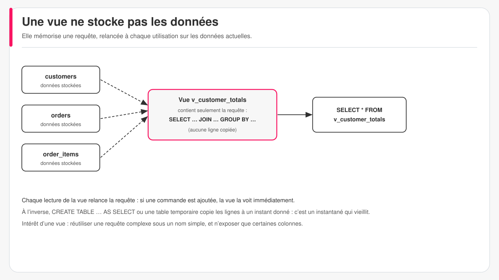

Quatre façons de conserver un résultat
| Objet | Contient des données ? | Durée de vie | Voit les changements ? |
|---|---|---|---|
| Table | Oui | Permanente | — (c’est la source) |
| Résultat de requête | Oui, un instant | Le temps de l’affichage | Non |
| Table temporaire | Oui (une copie) | La session de connexion | Non : c’est un instantané |
| Vue | Non, seulement la requête | Permanente | Oui, toujours à jour |

Tables temporaires
Une table temporaire stocke un résultat intermédiaire pour le réutiliser plusieurs fois dans une session. Elle disparaît à la déconnexion, n’est visible que de la connexion qui l’a créée, et n’encombre pas le schéma.
La méthode la plus portable est CREATE TEMPORARY TABLE … AS SELECT …, qui fonctionne sur les trois moteurs. Exemple : stocker le total de chaque commande, puis l’exploiter.
CREATE TEMPORARY TABLE order_totals AS
SELECT order_id, ROUND(SUM(quantity * unit_price), 2) AS total
FROM order_items
GROUP BY order_id;
SELECT c.last_name, o.order_id, t.total
FROM order_totals AS t
INNER JOIN orders AS o ON o.order_id = t.order_id
INNER JOIN customers AS c ON c.customer_id = o.customer_id
WHERE t.total > 30
ORDER BY t.total DESC, o.order_id;
Résultat attendu sur le jeu de données de référence (obtenu en exécutant la requête lors de la génération du cours).
| last_name | order_id | total |
|---|---|---|
| Bernard | 8 | 64.80 |
| Durand | 2 | 40.40 |
| Durand | 4 | 34.90 |
La requête de calcul n’est exécutée qu’une fois ; on interroge ensuite order_totals autant de fois que nécessaire. C’est utile pour décomposer une requête complexe en étapes lisibles.
SELECT … INTO : attention aux sens différents
Le référentiel mentionne l’instruction INTO. Son sens dépend du moteur :
PostgreSQL
-- PostgreSQL : SELECT ... INTO crée une NOUVELLE table
SELECT order_id, ROUND(SUM(quantity * unit_price), 2) AS total
INTO TEMPORARY order_totals
FROM order_items
GROUP BY order_id;
SELECT order_id, total FROM order_totals WHERE total > 40 ORDER BY order_id;
MySQL
-- MySQL : SELECT ... INTO sert à remplir des VARIABLES ou un fichier.
-- Pour créer une table temporaire :
CREATE TEMPORARY TABLE order_totals AS
SELECT order_id, ROUND(SUM(quantity * unit_price), 2) AS total
FROM order_items
GROUP BY order_id;
SELECT order_id, total FROM order_totals WHERE total > 40 ORDER BY order_id;
SQLite
-- SQLite : pas de SELECT ... INTO. Équivalent :
CREATE TEMPORARY TABLE order_totals AS
SELECT order_id, ROUND(SUM(quantity * unit_price), 2) AS total
FROM order_items
GROUP BY order_id;
SELECT order_id, total FROM order_totals WHERE total > 40 ORDER BY order_id;
Résultat attendu sur le jeu de données de référence (les trois variantes produisent le même résultat logique).
| order_id | total |
|---|---|
| 2 | 40.40 |
| 8 | 64.80 |
Constats sur les moteurs réels : sous PostgreSQL, SELECT … INTO nouvelle_table crée une table (permanente si l’on n’écrit pas TEMPORARY) ; sous MySQL, SELECT book_id INTO tmp FROM books échoue (Undeclared variable: tmp) car INTO désigne une variable ; sous SQLite, INTO est une erreur de syntaxe. Dans d’autres SGBD (SQL Server, notamment), SELECT … INTO crée aussi une table. CREATE TABLE … AS SELECT est l’approche explicite et portable : privilégiez-la. (Dans PostgreSQL, SELECT … INTO variable existe aussi, mais uniquement dans le code procédural PL/pgSQL.)
Vues
Une vue est une requête SELECT enregistrée dans la base sous un nom. On l’interroge ensuite comme une table, mais elle ne stocke aucune donnée : à chaque lecture, la requête est exécutée sur les tables actuelles.
CREATE VIEW nom_de_la_vue AS
SELECT ...;
Pourquoi des vues ? Pour réutiliser une requête complexe sous un nom simple, pour masquer des colonnes ou des lignes (donner l’accès à une vue plutôt qu’à la table), et pour standardiser des calculs.
Vue sur une requête simple
CREATE VIEW v_available_books AS
SELECT book_id, title, author, unit_price
FROM books
WHERE stock_quantity > 0;
SELECT book_id, title, unit_price
FROM v_available_books
WHERE unit_price > 12
ORDER BY book_id;
Résultat attendu sur le jeu de données de référence (obtenu en exécutant la requête lors de la génération du cours).
| book_id | title | unit_price |
|---|---|---|
| 1 | Les Misérables | 12.90 |
| 11 | Histoire de la Révolution française | 14.50 |
| 14 | Python pour les curieux | 29.90 |
| 15 | SQL pas à pas | 34.90 |
v_available_books contient les livres en stock. On la filtre ensuite comme une table. Le préfixe v_ est une convention de nommage.
La vue voit toujours les données actuelles
CREATE VIEW v_available_books AS
SELECT book_id, title, author, unit_price
FROM books
WHERE stock_quantity > 0;
UPDATE books SET stock_quantity = 0 WHERE book_id = 15;
SELECT COUNT(*) AS available_books FROM v_available_books;
Résultat attendu sur le jeu de données de référence (obtenu en exécutant la requête lors de la génération du cours).
| available_books |
|---|
| 13 |
Avant la modification, 14 livres étaient disponibles ; après avoir mis le stock de SQL pas à pas à zéro, la vue en montre 13 sans qu’on l’ait recréée. Une table copiée n’aurait rien vu.
Vue avec calculs et alias
Les alias AS deviennent les noms de colonnes de la vue : indispensables pour nommer un calcul.
CREATE VIEW v_order_totals AS
SELECT o.order_id,
o.customer_id,
o.order_date,
o.status,
ROUND(SUM(oi.quantity * oi.unit_price), 2) AS total_amount
FROM orders AS o
INNER JOIN order_items AS oi ON oi.order_id = o.order_id
GROUP BY o.order_id, o.customer_id, o.order_date, o.status;
SELECT order_id, status, total_amount
FROM v_order_totals
WHERE total_amount >= 30
ORDER BY order_id;
Résultat attendu sur le jeu de données de référence (obtenu en exécutant la requête lors de la génération du cours).
| order_id | status | total_amount |
|---|---|---|
| 2 | shipped | 40.40 |
| 4 | pending | 34.90 |
| 8 | paid | 64.80 |
Les commandes à 30 € ou plus. Sans AS total_amount, la colonne calculée n’aurait pas de nom exploitable, et certains moteurs refusent une vue dont les colonnes n’ont pas de nom.
Vue avec sous-requête et filtres NOT IN, IS NULL, LIKE
CREATE VIEW v_unsold_books AS
SELECT book_id, title
FROM books
WHERE book_id NOT IN (SELECT book_id FROM order_items);
SELECT book_id, title FROM v_unsold_books ORDER BY book_id;
Résultat attendu sur le jeu de données de référence (obtenu en exécutant la requête lors de la génération du cours).
| book_id | title |
|---|---|
| 6 | Arsène Lupin, gentleman-cambrioleur |
| 13 | Le Livre de la jungle |
Les livres jamais commandés : la vue masque une requête de type « absence de correspondance ». (order_items.book_id n’est jamais NULL, donc NOT IN est sans danger ici ; voir le chapitre 9.)
CREATE VIEW v_customers_without_phone AS
SELECT customer_id, first_name, last_name, city
FROM customers
WHERE phone IS NULL;
SELECT customer_id, last_name FROM v_customers_without_phone ORDER BY customer_id;
Résultat attendu sur le jeu de données de référence (obtenu en exécutant la requête lors de la génération du cours).
| customer_id | last_name |
|---|---|
| 2 | Martin |
| 4 | Petit |
| 6 | Richard |
| 9 | Laurent |
| 12 | Lefèbvre |
Un filtre LIKE dans une vue fonctionne de la même façon :
CREATE VIEW v_le_titles AS
SELECT book_id, title
FROM books
WHERE title LIKE 'Le %';
SELECT book_id, title FROM v_le_titles ORDER BY book_id;
Résultat attendu sur le jeu de données de référence (obtenu en exécutant la requête lors de la génération du cours).
| book_id | title |
|---|---|
| 2 | Le Rouge et le Noir |
| 4 | Le Crime de lOrient-Express |
| 5 | Le Chien des Baskerville |
| 13 | Le Livre de la jungle |
Une vue qui en utilise une autre
Une vue peut s’appuyer sur une autre vue : le client le plus dépensier de la librairie, avec v_order_totals.
CREATE VIEW v_order_totals AS
SELECT o.order_id, o.customer_id, o.status,
ROUND(SUM(oi.quantity * oi.unit_price), 2) AS total_amount
FROM orders AS o
INNER JOIN order_items AS oi ON oi.order_id = o.order_id
GROUP BY o.order_id, o.customer_id, o.status;
SELECT c.last_name, ROUND(SUM(v.total_amount), 2) AS spent
FROM v_order_totals AS v
INNER JOIN customers AS c ON c.customer_id = v.customer_id
WHERE v.status IN ('paid', 'shipped')
GROUP BY c.customer_id, c.last_name
ORDER BY spent DESC, c.customer_id
LIMIT 3;
Résultat attendu sur le jeu de données de référence (obtenu en exécutant la requête lors de la génération du cours).
| last_name | spent |
|---|---|
| Durand | 93.40 |
| Bernard | 79.60 |
| Moreau | 29.80 |
Limites et particularités des vues
- Pas de copie : une vue complexe est recalculée à chaque lecture ; elle ne rend pas la requête plus rapide.
- Modification : une vue simple (une seule table, sans agrégat) est souvent modifiable par
INSERT/UPDATE/DELETE; une vue avecGROUP BYou jointure ne l’est généralement pas. - Remplacer une vue :
CREATE OR REPLACE VIEWexiste sur PostgreSQL et MySQL, pas sur SQLite (constaté : erreur de syntaxe), où l’on écritDROP VIEW …puisCREATE VIEW …. - Supprimer :
DROP VIEW nom;ne touche pas aux données des tables. - Vues matérialisées (PostgreSQL :
CREATE MATERIALIZED VIEW) : elles stockent réellement le résultat, à rafraîchir à la main. Approfondissement, absent de MySQL et SQLite. - Dépendances : supprimer ou renommer une table utilisée par une vue la rend invalide.
Exercice guidé : une vue des commandes à expédier
Créez une vue v_order_totals (comme ci-dessus) puis utilisez-la pour lister les commandes payées dont le total dépasse 25 €, du plus gros au plus petit.
Afficher la correction détaillée
CREATE VIEW v_order_totals AS
SELECT o.order_id, o.customer_id, o.order_date, o.status,
ROUND(SUM(oi.quantity * oi.unit_price), 2) AS total_amount
FROM orders AS o
INNER JOIN order_items AS oi ON oi.order_id = o.order_id
GROUP BY o.order_id, o.customer_id, o.order_date, o.status;
SELECT order_id, total_amount
FROM v_order_totals
WHERE status = 'paid' AND total_amount > 25
ORDER BY total_amount DESC, order_id;
Résultat attendu sur le jeu de données de référence (obtenu en exécutant la requête lors de la génération du cours).
| order_id | total_amount |
|---|---|
| 8 | 64.80 |
| 10 | 28.80 |
| 3 | 25.30 |
La vue encapsule la jointure et le GROUP BY ; la requête finale ne contient plus que le filtre et le tri. Si la règle de calcul du total change, on corrige la vue, pas les dizaines de requêtes qui l’utilisent.
Exercice autonome : la vue des clients de Paris abonnés
Créez une vue v_paris_newsletter listant les clients de Paris abonnés à la newsletter (prénom, nom, e-mail), puis interrogez-la triée par customer_id. Pensez à inclure customer_id dans la vue.
Afficher la correction détaillée
CREATE VIEW v_paris_newsletter AS
SELECT customer_id, first_name, last_name, email
FROM customers
WHERE city = 'Paris' AND newsletter_opt_in = TRUE;
SELECT customer_id, first_name, email
FROM v_paris_newsletter
ORDER BY customer_id;
Résultat attendu sur le jeu de données de référence (obtenu en exécutant la requête lors de la génération du cours).
| customer_id | first_name | |
|---|---|---|
| 3 | Emma | emma.bernard@example.org |
| 5 | Léa | lea.robert@example.org |
Pour trier par customer_id via la vue, la colonne doit figurer dans la vue : une vue n’expose que ce qu’on lui fait sélectionner.
Exercice de débogage : l’instantané qui vieillit
Un collègue a créé une table temporaire cheap_books des livres à moins de 8 €, puis baisse le prix du livre 4 à 5 €. Sa table n’en tient pas compte. Pourquoi une vue aurait-elle évité ce problème ?
Afficher la correction détaillée
Une table temporaire (ou CREATE TABLE … AS) copie les lignes au moment de sa création : elle ne suit pas les modifications ultérieures. Une vue relance la requête à chaque lecture et reflète donc toujours l’état courant. À l’inverse, si l’on veut figer un état (rapport à une date précise), l’instantané est le bon outil.
Valider · question 1
Voir la justification de chaque réponse
- Incorrect — Aucune, ce sont deux noms pour la même chose : Elles diffèrent par le stockage et la fraîcheur des données.
- Bonne réponse — La vue mémorise une requête et reste à jour ; la table temporaire copie des lignes à un instant donné : Une vue ne stocke aucune donnée.
- Incorrect — La vue est toujours plus rapide : Elle réexécute la requête à chaque lecture.
Valider · question 2
Voir la justification de chaque réponse
- Incorrect — SELECT … INTO nouvelle_table : Valable pour une table sous PostgreSQL seulement ; MySQL et SQLite la refusent.
- Bonne réponse — CREATE TABLE nouvelle_table AS SELECT … : Approche portable (en ajoutant TEMPORARY pour une table temporaire).
- Incorrect — COPY TABLE … : Cette instruction n’existe pas en SQL standard.
Valider · question 3
Voir la justification de chaque réponse
- Incorrect — C’est interdit sans AS : Ce n’est pas toujours une erreur, mais le nom serait inexploitable.
- Bonne réponse — L’alias devient le nom de la colonne de la vue et permet de la filtrer et de la lire : Sans alias le nom dépend du moteur.
- Incorrect — AS accélère la vue : Aucun effet sur la vitesse.